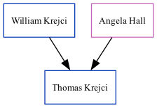

Thomas Evans Krejci 2003 -
[
Home
] | [
Surnames Index
] | [
Census Index
] | [
Family History
]
The child of
William Krejci
and
Angela Hall
.
Parents
William Douglas
Angela Rae
Family Tree

Generated by
ged2site
. Last updated on Jun 13, 2024